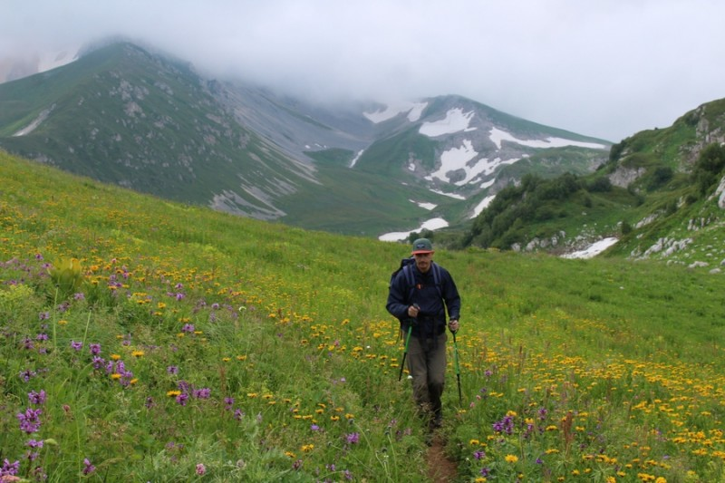

Приглашаю желающих пойти в поход по знаменитому 30 маршруту в Кавказском заповеднике. Это интересная тропа через горы к морю. Популярный маршрут у туристов со всей России.
Поход будет 4 дня/3 ночи. За это время мы пройдем 70 км по самым красивым местам заповедника.
Маршрут начинается с плато Лагонаки (Адыгея). Идем не спеша по плато через 2 перевала к приюту Фишт через озеро Псенодах, мимо горы Оштен, Пшеха-Су и Фишт.
